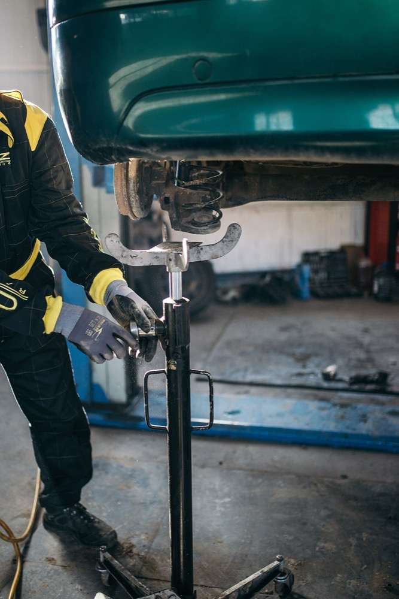
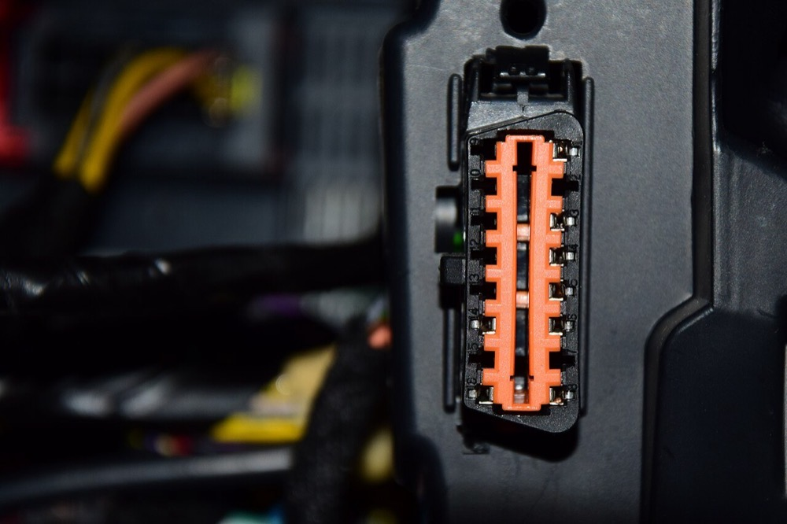

後継者がいない専業の整備工場を、融資を使って1社ずつ株式取得で買収する。電子制御装置の整備とエーミングの設備、整備士を複数の工場で共有し、1工場では対応できない電動車と先進運転支援システムの整備を受け入れる。地域の法人の車両管理部門とリース会社に、点検と車検を一括で販売する。
日本自動車整備振興会連合会の令和6年度調査では、総整備売上高は6兆2,561億円で前年度比5.9%増である1。売上は2023年7月から2024年6月までに決算を迎えた事業の実績である。事業場数は2024年6月末に92,384事業場、整備要員は402,025人で平均年齢47.4歳である1。
| 業態 | 整備売上高 | 事業場の構成比 |
|---|---|---|
| 専業 | 2兆2,483億円 | 61.5% |
| 兼業 | 7,716億円 | 17.2% |
| ディーラー | 2兆9,743億円 | 17.5% |
| 自家 | 2,619億円 | 3.8% |
売上高は出典1、構成比は出典2による。
本案の対象は専業と兼業で、合計3兆199億円である。
推計 専業1事業場当たりの整備売上 ＝ 専業の売上 ÷ 専業の事業場数
2兆2,483億円 ÷ 92,384 × 0.615 ≒ 2兆2,483億円 ÷ 56,816 ≒ 4,000万円となる。専業事業場の67.1%は整備要員2〜3人である2。対象とする売上1.5億円以上の工場は、専業の中では上位の規模に当たる。
整備は各国の車検制度と保有台数に依存する国内産業である。本ページでは海外の整備市場の規模を一次情報で確認できなかった。
| 年 | 変化 | 数値 |
|---|---|---|
| 2024年6月 | 指定工場の減少 | 29,932事業場で前年比158事業場減、2年連続の減少1 |
| 2023年度実績 | 整備要員の高齢化 | 平均年齢47.4歳、前年比0.2歳上昇1 |
| 2024年度 | 整備事業者の撤退 | 休廃業・解散382件と倒産63件で計445件、過去最多。赤字の事業者は26.2%3 |
| 2026年1〜6月 | 撤退の加速 | 休廃業・解散259件で前年同期比約4割増。倒産36件を含め295件で、半期として過去最多。資本金1,000万円未満の小規模事業者が約8割4 |
| 2024〜2026年 | 電動化と電子化 | 街の整備工場が電装系とセンサー系の整備に対応できず、正規ディーラーに顧客が移る例がある3。エーミングなど電子機器の検査に対応した事業者は工賃を上げた例がある4 |
整備売上は増えているが、事業者は減っている。撤退の大半は新技術に対応する人材と設備をもたない小規模事業者である4。電子制御の整備に投資できない工場が売りに出る一方で、残った工場には入庫が集まる。


| 種類 | 事業者 | 動き |
|---|---|---|
| ディーラー | 自動車メーカー系の販売会社 | 整備売上2兆9,743億円で全体の47.5%1。1事業場当たりの売上は推計約1.8億円で、専業の約4.6倍 |
| カー用品・車検チェーン | 用品店と車検のフランチャイズ | 各社の整備売上は本ページでは確認できなかった |
| 買収による統合 | 中小の整備会社と仲介 | 仲介サイトに整備工場の売却案件が445件掲載されている5。複数工場を連続で買収した成約事例は確認できなかった |
仲介サイトの掲載例では、愛知の売上1億〜2億円の工場が希望価格6,000万円、関西の売上3億〜5億円・EBITDA3,000万円以上の整備と販売の会社が希望価格2億円である5。いずれも売主の希望額で、成約価格ではない。
整備工場は道路運送車両法に基づき事業場ごとに認証を受け、車検の検査まで行う工場は指定を受ける。株式取得であれば法人は同じで、認証と指定は事業場に残る。指定工場は自動車検査員を置く必要があり、検査員が退職すると指定の要件を満たせなくなる。買収の価値は設備より、整備士と検査員の継続にある。
首位の条件 整備市場6.26兆円の首位はディーラー網であり、独立系のグループが10年で上回る道筋はない。対象を専業と兼業の3兆199億円に限っても、地域のディーラーグループの整備売上を上回る必要がある。首位に近づく条件は3つある。①1つの県で指定工場を集中して買収し、検査員と高額設備を工場間で共有すること。②電子制御の整備とエーミングを、グループ内の拠点工場に集めること。③リース会社と法人の車両管理部門から、地域の車両をまとめて受託すること。
サーチファンド型で始める。創業者が自ら買収対象を検索し、買収後は社長として経営する。投資家の資金は入れず、自己資金と融資で1社目を買収する。
| 用途 | 金額 | 検証すること |
|---|---|---|
| 検索期間の生活費と活動費 6か月 | 500万円 | 地銀・税理士・整備振興会の紹介で、条件に合う案件を何件得られるか |
| 財務・労務・法務の調査、仲介手数料 | 700万円 | 未払残業代、設備の状態、指定の要件と過去の行政処分 |
| 1社目の株式取得の自己資金 | 2,000万円 | EBITDA2,000〜3,000万円の工場を約1億円で取得できるか |
| スキャンツールとエーミング設備 | 800万円 | 電子制御の整備で工賃単価と入庫数がどれだけ上がるか |
| 合計 | 4,000万円 |
| 月 | 計画 |
|---|---|
| 1〜3月目 | 対象地域を1つの県に絞る。売上高1.5〜3億円・整備士8〜15人・指定工場・後継者不在、の条件を満たす工場を30社集める |
| 4〜6月目 | 3社と面談し1社と基本合意する。調査で整備士と検査員の年齢、継続の意思、設備の更新時期を確認する |
| 7月目 | 株式を取得する。資金は自己資金2,000万円、日本政策金融公庫の事業承継向け融資約5,000万円6、地銀の融資約2,000万円、売主への分割払い約1,000万円とする |
| 8〜12月目 | 旧経営者を顧問として残し、整備士と顧客の離反を防ぐ。リース会社と地域の法人3社に車両の一括受託を提案する。2社目の候補を同じ県で3社まで絞る |
1年目の判定基準は、整備士と検査員の離職がなく、法人の受託で入庫台数が買収前から1割以上増えることである。
| 段階 | 資金 | 金融機関 | 条件 |
|---|---|---|---|
| 1社目 1年目 | 事業承継融資、買収融資、売主の分割払い | 日本政策金融公庫 国民生活事業、地銀 | 公庫の限度は別枠7,200万円6。工場の土地と建物を担保にできる場合は地銀の融資額が増える |
| 2〜5社目 2〜4年目 | 持株会社による買収融資、資本性劣後ローン | 地銀、商工中金、日本政策金融公庫 中小企業事業 | 資本性ローンの限度は15億円、期限一括返済で最長20年7 |
| 設備 毎年 | 診断機器、リフト、エーミング設備のリース | リース会社、機器メーカー系金融 | 設備はリースで調達し、買収資金と分ける |
| 6社目以降 5年目以降 | シンジケートローン | メガバンク、地銀の協調融資 | 連結EBITDAの3〜4倍を上限に借りる |
| 年目 | 1 | 2 | 3 | 5 | 7 | 10 |
|---|---|---|---|---|---|---|
| 工場数 | 1 | 3 | 7 | 22 | 50 | 110 |
| 売上高 億円 | 2 | 6 | 15 | 50 | 120 | 280 |
| 営業利益 億円 | 0.12 | 0.4 | 1.1 | 4 | 10 | 25 |
| 累計投資 億円 | 1.0 | 3.2 | 8 | 27 | 65 | 150 |
| 借入残高 億円 | 0.9 | 2.8 | 6.5 | 20 | 45 | 95 |
| 年目 | 1 | 2 | 3 | 5 | 7 | 10 |
|---|---|---|---|---|---|---|
| 工場数 | 1 | 2 | 4 | 9 | 16 | 30 |
| 売上高 億円 | 2 | 4 | 8 | 18 | 32 | 60 |
| 営業利益 億円 | 0.08 | 0.16 | 0.4 | 1.0 | 2.0 | 4.2 |
| 累計投資 億円 | 1.0 | 2.0 | 3.8 | 8.5 | 15 | 28 |
| 借入残高 億円 | 0.9 | 1.7 | 3 | 6.5 | 11 | 18 |
前提
楽観でも10年目の売上高は280億円で、1,000億円の目安に届かない。1,000億円には約400工場が必要で、10年で年平均40工場の統合を要する。保守では30工場、売上高60億円に留まる。
楽観の売上高280億円は、専業と兼業の市場3兆199億円の約0.9%である。整備市場全体ではディーラー網が47.5%を占めており、10年でシェア1位に届かない。
地域を限っても届く見込みは低い。1つの地方ブロックの専業と兼業を全国の約10%と仮定すると約3,000億円で、1,000億円以上の条件を満たす。楽観の280億円をすべて1ブロックに集中すると約9%に当たる。ただしこの市場はディーラーを除いた区分であり、顧客はディーラーと専業工場を比べて選ぶ。地域のメーカー系販売会社の整備売上は公表されておらず、それを上回る道筋は示せない。
停止する位置は3つある。1つ目は1社目で整備士か検査員が退職し、指定の要件を満たせなくなる場合である。2つ目は5年目前後で、工場長と検査員を自社で育成できない場合である。3つ目は電動車の比率が上がり、メーカーの診断情報を独立系の工場が得られない場合である。
整備工場そのものの海外展開は想定しない。車検制度と認証は国ごとに異なる。展開しうるのは整備士の育成と、複数工場で設備を共有する運営の手法である。
| 順 | 国 | 理由 |
|---|---|---|
| 1 | タイ、インドネシア | 日本車の保有が多く、日本式の点検整備の手法を整備会社に提供できる。整備士の育成で日本への受け入れと組み合わせられる |
| 2 | 台湾 | 日本車の比率が高く、高齢化が進んでいる |
グローバルなインフラになる見込みは低い。
| # | 基準 | 判定 | 根拠 |
|---|---|---|---|
| 1 | 50年、魂を燃やし続けられるか | 創業者が判定 | |
| 2 | 10年以内に、国内市場規模1,000億円以上の市場でシェア1位になれるか | × | 整備市場の47.5%をディーラー網が占め、地域を限っても地域のディーラーグループを上回る道筋を示せない |
| 3 | 4,000万円で始められ、融資で伸ばせるか | ◎ | 1工場は約1億円で取得でき、公庫の承継融資と地銀融資で自己資金の約5倍の買収ができる |
| 4 | グローバルなインフラになり得るか | × | 車検制度は国ごとに異なり、輸出できるのは育成と運営の手法に限られる |
| 5 | 営業力が最初の売上に直接結びつくか | ○ | リース会社と法人の車両管理部門から車両を一括で受託すれば、入庫数が直接増える |
| 6 | 同じビジョンを共有する仲間を誘える事業か | 創業者が判定 | |
| 7 | 本業が早く現金を生み、返済と出資の原資になるか | ○ | 車検と点検は入庫の都度に代金を受け取る。利益率は6%前後で、大半は返済に充てられる |
| 8 | 投資先を束ねる群の中核になれるか | ○ | 板金・中古車・部品・人材の各事業が、グループの入庫車両を共通の需要にできる |
| 9 | 成長の資金源がA・B・Cのどれに当たるか | C | 買収対象の営業キャッシュフローを返済原資にした借入で買収する |
1. 整備士と検査員の離職 工場の価値は整備士と検査員にある。検査員が退職すると指定の要件を満たせず、車検の売上が失われる。対策は検査員を複数の工場で融通できる体制にし、買収前に資格者の年齢と継続の意思を確認することである。整備士の採用難そのものは潰せない。
2. 電動化による整備需要の変化 電気自動車はエンジンオイルなどの消耗品の交換が少ない。電動車の比率が上がると、従来の点検の売上は減る。対策は電子制御の整備と電池の診断に早く投資し、単価の高い作業に移ることである。移行の速度は予測できない。
3. メーカーの診断情報と部品の囲い込み 電子制御の整備には車種ごとの診断情報が要る。メーカーが情報をディーラーに限ると、独立系の工場は受け入れられない。対策は汎用の診断機器と情報提供サービスを使うことであるが、メーカーの方針は変えられない。
4. 不正車検による指定の取消し 指定工場で検査の不正があると、指定の取消しを受ける。買収前の不正が後から判明する可能性もある。対策は買収前に検査記録を抜き取りで確認し、表明保証と分割払いで支払いの一部を後にすることである。
5. 1工場の規模が小さい 専業の平均売上は約4,000万円で、条件に合う工場は限られる。10年で110工場を買収するには、売上2億円前後の工場を年に10工場以上見つける必要がある。小さな工場を拠点工場の衛星として買収すれば数は増えるが、統合の手間も増える。